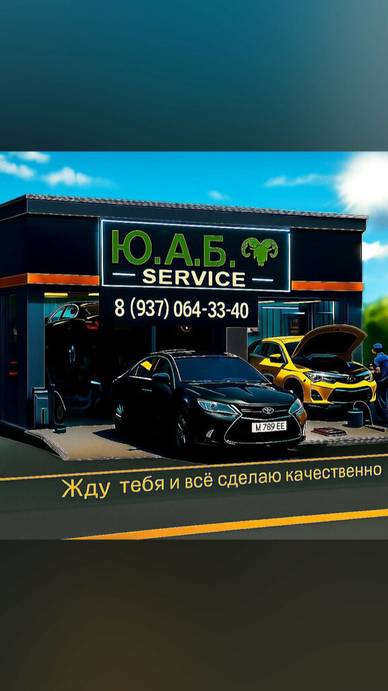

2ГИС
Оценок: 64 · Отзывов: 46
Открыть отзывыПроверено 14.11.2026пос. Придорожный
Замена масла, ремонт бензиновых двигателей и ходовой части, обслуживание автомобильных климатических систем.
+7‒937‒064‒33‒40Уточните часы по телефону

Для вашего автомобиля
Найдите нужную работу или позвоните, чтобы обсудить ваш вопрос.
Уточняйте по телефону
Уточняйте по телефону
Уточняйте по телефону
Уточняйте по телефону
Уточняйте по телефону
Уточняйте по телефону
Уточняйте по телефону
Уточняйте по телефону
Уточняйте по телефону
По этому запросу услуг не найдено. Попробуйте другое название или позвоните в мастерскую.
Дата прайса в источнике: Обновлено 28 апреля 2025. Стоимость и состав работ уточняйте по телефону.
Опыт посетителей
Рейтинги площадок и пересказы отзывов. Полные тексты доступны по ссылкам.
Посетитель положительно оценивает скорость и качество работ.
Читать на картахВ отзыве отмечены ремонт тормозов и ходовой, а также наличие запчастей.
Читать на картахБудем на связи
| Понедельник | 09:00–20:00 |
|---|---|
| Вторник | 09:00–20:00 |
| Среда | 09:00–20:00 |
| Четверг | 09:00–20:00 |
| Пятница | 09:00–20:00 |
| Суббота | 09:00–20:00 |
| Воскресенье | 09:00–20:00 |
Часы в праздники уточняйте по телефону.
Карта © OpenStreetMap
Открыть карточку и маршрутРасскажите, что нужно автомобилю. Уточните стоимость и время для визита.